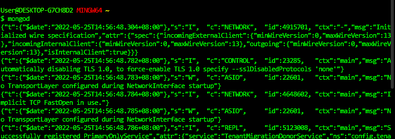

Create Operation
Start the server by typing mongod in the command line. The result should be similar like this...

Open another command line interface as the current terminal won't allow you to do anything. Then execute the mongo shell by typing mongo.

If you need any help, just type help in the console, it will list some available commands.

Typing show dbs prints out the available databases

To create a new database, enter command use nameDB , this will currently not be printed when you use show dbs in command line. Use any name of your liking for the nameDB

To insert or create data inside the nameDB, we call the create method db.collectionName.insertOne() or db.collectionName.insertMany(),

Here is the syntax.

To delete a database, we use...

We firsr switch to the database to be deleted, and then we can use db.dropDatabase() to purge it down